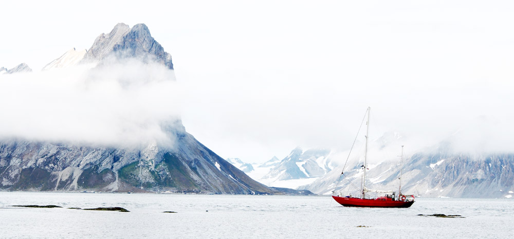

Z wielkim żalem informujemy, że w dniu 27 grudnia 2020 roku po ciężkiej chorobie odszedł od nas
Kapitan Jerzy Różański.
Jerzy Różański to budowniczy i właściciel jachtu Eltanin. Pierwszy jego kapitan, związany z Arktyką już od 70. lat.
To wielki przyjaciel wszystkich polarników, który wielokrotnie pomagał polskim ekspedycjom badawczym. Przez wiele lat pływał Eltaninem między Hornsundem (Polską Stacją Polarną im. Stanisława Siedleckiego), Calypsobyen (Stacją Polarną UMCS z Lublina), Kaffiøyrą (Stacją Polarną UMK z Torunia), Petuniabuktą (bazą Uniwersytetu im. Adama Mickiewicza z Poznania) i po niezliczonych innych miejscach, w które mało kto był gotów wpłynąć. Nikt tak nie znał wód Svalbardu jak On. Nigdy nie zawiódł tych, co jego pomocy potrzebowali. To jeden z najbardziej rozpoznawalnych Polaków na Svalbardzie.
W ostatnich latach Jerzy Różański mieszkał na Kaszubach.
Jurek Różański wielokrotnie pokonywał niebezpieczne fale arktycznych wód. Tej ostatniej, jaką była Jego choroba, choć się nie poddawał, nie udało mu się pokonać…
W naszej pamięci Kapitan Jerzy Różański na zawsze pozostanie, jako nasz wielki Polarny Przyjaciel.
Spitsbergeńskie fiordy już nigdy nie będą takie same…
Żegnaj Kapitanie, żegnaj Przyjacielu
Informacje o uroczystościach pogrzebowych na stronach:
https://www.facebook.com/SV.Eltanin

← Wszystkie aktualności